專案類型
3 人 團體專案
Regular 是一款以 25–35 歲女性為主要使用者，聚焦經期、生育規劃與身心健康的行動服務。專案從女性在健康管理與人生規劃中面臨的資訊分散、可信度難以判斷，以及婚育期待所帶來的心理壓力出發，透過使用者訪談與需求整理，進一步規劃產品功能與使用體驗。
產品整合經期與健康紀錄、情緒照護、具文獻依據的衛教資訊與女性社群，讓使用者能持續追蹤自身狀態、理解身體變化，並取得相應的資訊與支持，提升對個人健康的掌握。
3 人 團體專案
2024.07~2024.11
使用者研究與洞察歸納、資訊架構與使用流程設計、UI 設計與原型製作、專案介紹影片製作
Figma、使用者訪談、KJ 法、User Journey Map
使用者研究與需求分析、Figma 高擬真互動原型、專案介紹影片
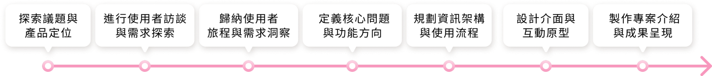
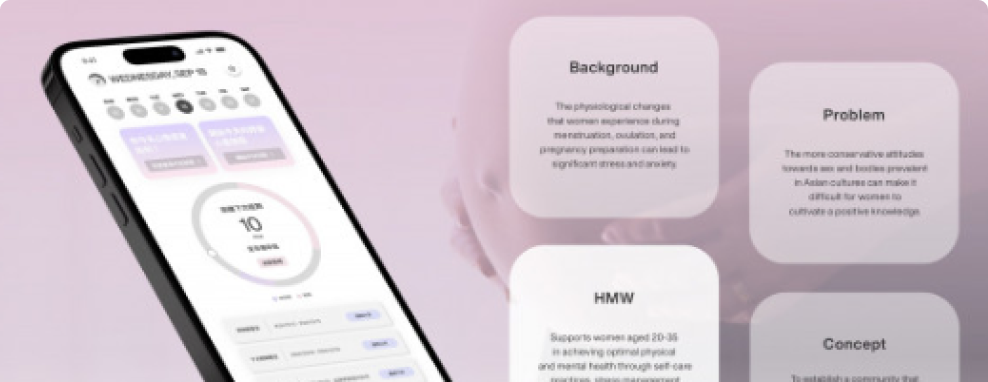
UX Design Awards 2025 國際競賽 第一階段新人獎提名
競賽規模 : 全球 38 個國家、440 組參賽者中，獲選為 162 組入圍作品之一
查看獲獎資訊現今女性在婚姻、生育與職涯上擁有更多元的選擇，但在面對結婚、生育等人生議題時，仍可能受到家庭、社會期待與傳統觀念的影響。同時，職涯發展、身體變化與生育規劃也可能在相近的人生階段交錯出現，使健康與未來規劃需要考量更多面向。
另一方面，性、生育與疾病等議題在部分亞洲文化中仍較為敏感，相關資訊與個人經驗不一定容易被公開討論。因此，團隊將女性的身體健康、生育選擇與人生規劃作為專案關注的主題，並以此作為 Regular 的產品發展起點。
以 25–35 歲女性為主要使用者，聚焦正處於職涯與人生規劃階段，並開始關注自身健康與生育選擇的女性。包含具有經期健康或生育規劃需求、正在考慮備孕與凍卵，以及希望更了解自身身體狀態與生活節奏的女性。
團隊以線上方式訪談 3 位目標使用者，了解她們在日常身體健康、生育考量與未來規劃中的經驗與需求。訪談資料透過 KJ 法進行整理與歸納，再將使用者於不同階段的行為、想法與情緒轉化為 User Journey Map。
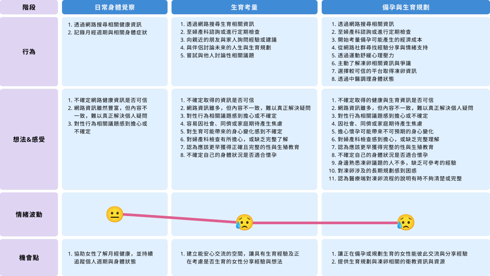
將使用者經驗梳理為三個階段，分析各階段的行為、想法與情緒變化，從中歸納資訊可信度、身體與生育的不確定感及外界期待等痛點，並辨識健康追蹤、可信資訊與經驗支持等產品機會。
根據使用者研究與 User Journey Map 中整理出的主要痛點與產品機會，團隊進一步將使用者需求轉化為四項 How Might We 問題，重新聚焦可被改善的核心議題，以作為後續產品發想與功能規劃的方向。
我們可以如何協助女性覺察並舒緩經期與生育規劃期間的身心壓力，維持良好的身心狀態？
我們可以如何讓女性更容易取得月經與身體健康相關知識，並持續掌握自身週期與健康狀態？
我們可以如何建立安全且具支持性的交流空間，讓具有生育經驗與正在考慮生育的女性能自在分享與交流？
我們可以如何提供可信且易理解的健康教育資源，協助女性理解自我照護、生育規劃與不同生殖選擇？
根據前述使用者需求與四項 HMW 設計提問，團隊進一步將產品方向轉化為健康管理、身心照護、健康資訊與社群支持等核心功能，並透過 Figma 建立高擬真互動原型，呈現主要使用情境與操作流程。
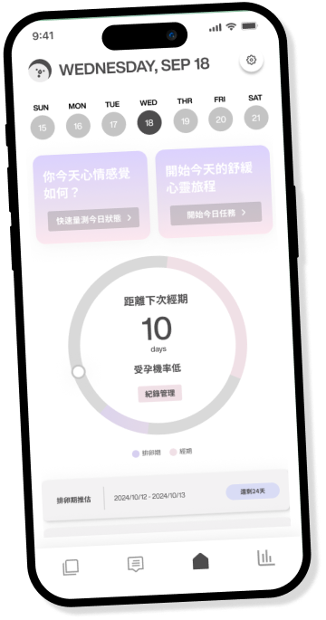
首頁整合月經週期、預計下次月經日期、排卵日與受孕機率等資訊，讓使用者快速掌握目前的週期狀態，並可依個人實際情況調整週期紀錄。
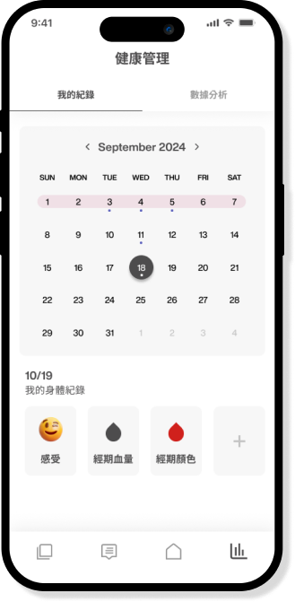
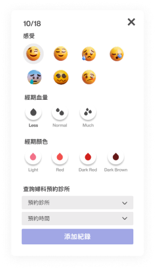
將日常健康資訊集中於同一介面，使用者可記錄情緒、月經狀態、分泌物與婦產科預約日期，降低健康資料分散於不同工具或紀錄方式中的情況。
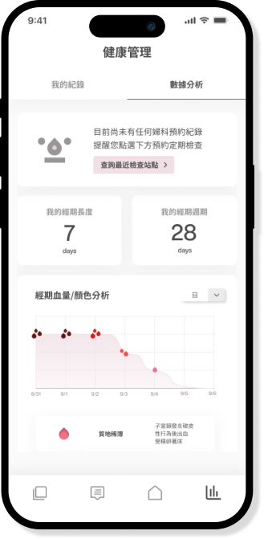
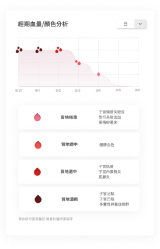
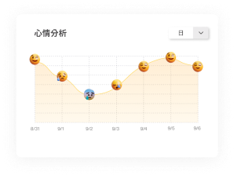
將累積的週期、情緒與身體紀錄轉換為視覺化圖表，協助使用者觀察不同時間點的變化與趨勢，更有系統地掌握個人健康狀態。
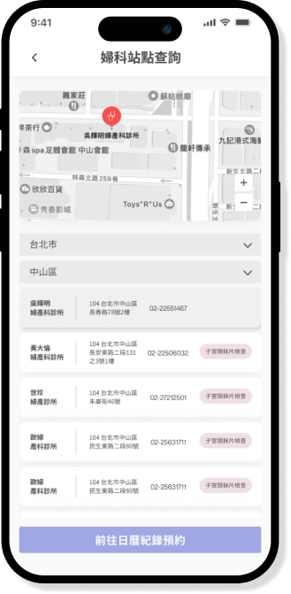
使用者可從健康數據分析查看上次婦科檢查時間，並在有檢查需求時前往婦科站點查詢，就近瀏覽婦產科診所資訊。完成預約後，可將預約時間加入日曆，方便後續追蹤與提醒。
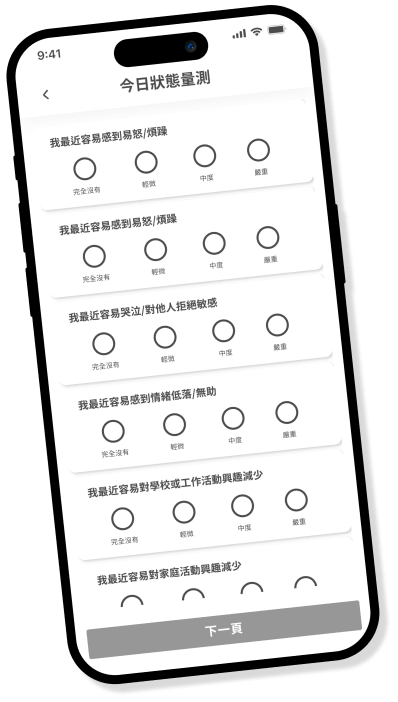
參考經前症候群相關量表設計情緒與身體狀態評估，協助使用者初步覺察近期的身心變化。完成評估後
呈現結果與相關提醒，並註明評估結果不取代專業醫療診斷，如有進一步疑慮仍應尋求專業協助。
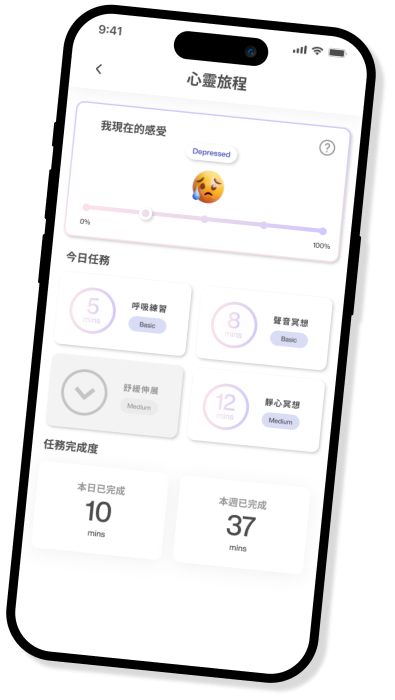
提供呼吸練習、聲音放鬆、舒緩伸展與冥想等低門檻日常任務，讓使用者依自身狀況選擇適合的放鬆方式。完成任務後可再次記錄情緒，持續觀察自身狀態的變化。
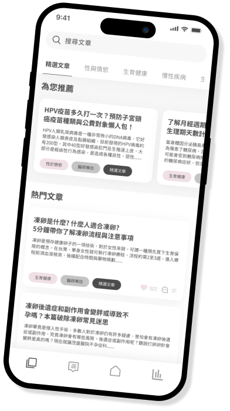
Regular 聚焦性與生殖健康、生育、疾病與飲食等女性常見議題，規劃以相關文獻為基礎的衛教內容，協助使用者降低搜尋與判斷大量健康資訊的負擔。
除了文章內容，也納入 Podcast 等不同形式的資源，讓使用者能依照通勤、休息或日常活動等情境選擇適合的資訊取得方式。
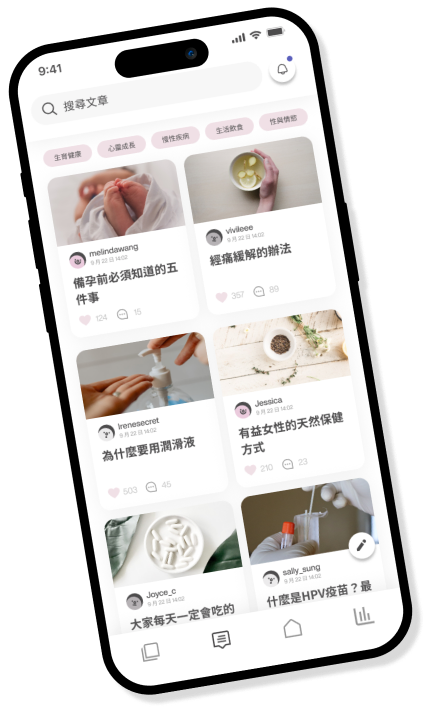
建立以女性健康、生育與個人經驗為主題的交流空間，讓具有相似經歷或正在面對相關選擇的使用者分享經驗、交流資訊，降低面對未知議題時的孤立感。
社群同時規劃內容審核與發文提醒機制，引導使用者留意分享內容的適切性與資訊責任，建立相對安全、尊重的交流環境。